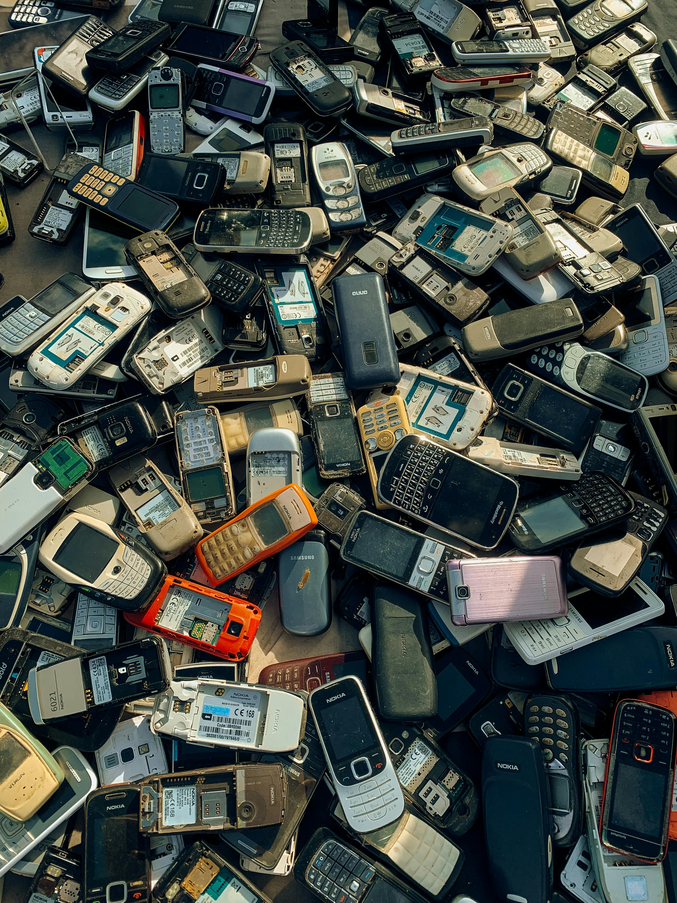

E-Trash
.jpg)
Welcome to E-trash, your digital hub for raising awareness and fostering a community committed to addressing the critical issue of electronic waste (e-waste). In a world where technological advancements occur at an unprecedented pace, our reliance on electronic devices has soared, leading to a parallel surge in discarded electronics.
At E-trash, we recognize the urgent need to confront the environmental and societal challenges posed by e-waste. Our mission is to educate, inspire, and mobilize individuals and businesses to make informed decisions that contribute to a sustainable and responsible approach to electronic consumption and disposal.
Our Goal

At E-trash, our primary focus is on providing comprehensive education about e-waste. We believe that awareness is the first step towards positive change. Through well-researched articles, infographics, and engaging multimedia content , we break down the complex aspects of electronic waste – from its origins to its impact on the environment and human health.